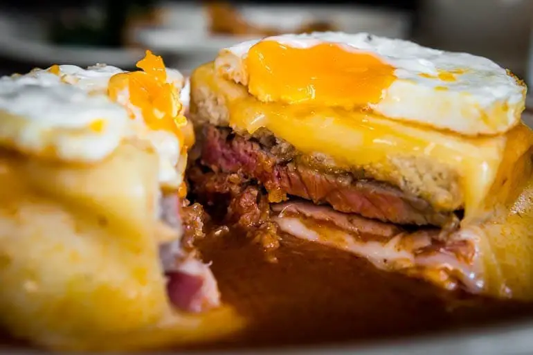

Francesinha
- Prep time
- 30 min
- Cook time
- 35 min
- Total time
- 65 min
- Servings
- 4 servings
Description
Francesinha is a sandwich from northern Portugal, especially the Porto region. It has two slices of bread and various meats, covered with melted cheese and served with sauce and fries. The sauce is a unique part of the sandwich, with each restaurant having its own recipe made from tomatoes broth, piri piri spices, beer, and Port wine.
It's not an everyday dish, but it's worth trying at least once in your life. If you visit Porto, make sure to try a francesinha.
Ingredients
For the sauce:
- olive oil as needed
- 1 sliced onion
- 2 garlic cloves
- 1 bay leaf
- 1 slice of ham
- 1 can of diced tomatoes
- 1/2 liter of beer
For the sandwich:
- 4 beef tenderloin steaks
- 4 fresh sausages
- 4 linguica sausages
- 8 slices of crustless sandwich bread
Method
- In olive oil, sauté the onion. As soon as it is translucent add the garlic.
- Let it sauté for a little while, then add the bay leaf
- Let it sauté for a little while, then add the bay leaf
- Let it sauté for a little while, then add the bay leaf
- Let it sauté for a little while, then add the bay leaf
- Let it sauté for a little while, then add the bay leaf